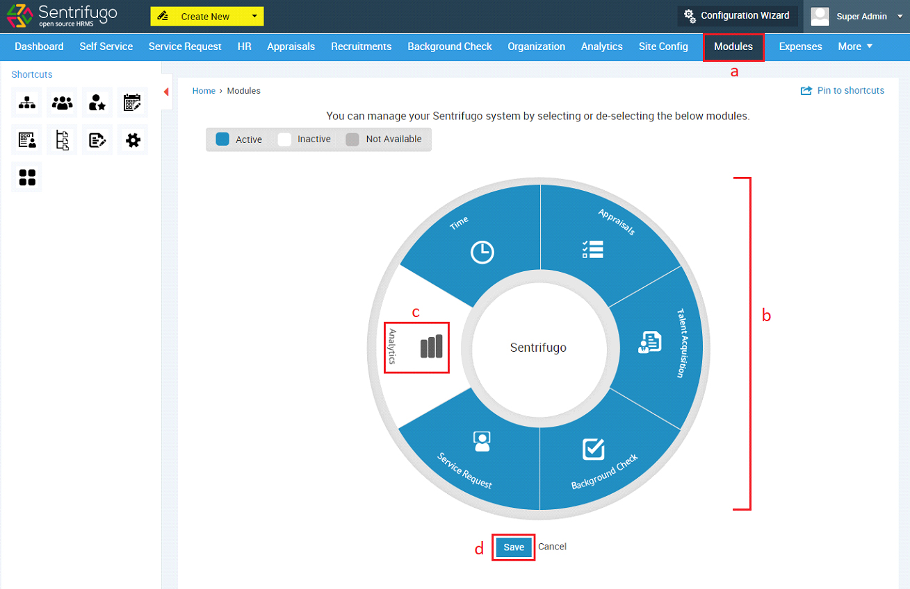

Modules

Click on Modules in the top menu
All the modules are displayed in a circular representation
Click on a module icon to activate or inactivate a module
Click SAVE button to apply the changes made